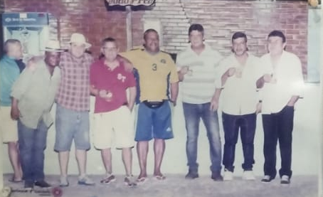

Fundado 1983 o CLUBE DA TORRE tem em seu Presidente, a grande força para figurar com boas ideias para o desenvolvimento do clube. O Clube da Torre é uma organização sem fins lucrativos, com sede em Niterói no bairro Largo da Batalha, que utiliza o esporte, a educação e a cultura como ferramentas para o desenvolvimento humano.
Com uma estrutura enxuta o CLUBE DA TORRE, o qual conta com um campo society de grama sintética, salão de festa, bar e churrasqueira. Num projeto ousado o CLUBE DA TORRE veem estruturando um Centro de Treinamento que
Devido ao trabalho sério e competente, o CLUBE DA TORRE é hoje, na região, referência. Preocupados em manter uma estrutura profissionalizada, o CLUBE DA TORRE mostra mais uma vez seu caráter arrojado ao lançar este projeto, onde através de parcerias buscará alcançar melhores resultados no âmbito esportivo, bem como atenderá também o aspecto social num trabalho voltado a comunidade e focado nas crianças.
Ser agente de transformação social atuando em prol da inclusão esportiva, cultural e social de crianças, adolescentes e a terceira idade em situação de vulnerabilidade social Além de agir em prol da FAMILIA.
Nossa metodologia exclusiva alia aulas de Formação Humana ao futebol no qual: a regra nº 1 é jogo justo que prima pela conduta ética, o Gol vale menos que o Drible e os alunos são os árbitros de seus próprios jogos. Estimulamos o diálogo com conteúdo e o protagonismo em todos os momentos.
O Projeto “Escolinha de Futebol pela Educação” é um programa sócio-esportivo, que apresenta uma proposta educativa baseada no conceito do esporte para desenvolvimento humano. Além disso, busca potencializar as ações de ensino e aprendizagem, complementando as ações da rede formal de educação.
Nossa metodologia exclusiva contempla: práticas esportivas, pedagógicas, atividades lúdicas e culturais para a formação de valores cidadãos na quadra, na escola, na rua e na vida. Para cada encontro, criamos um ambiente participativo, capaz de dar voz aos educandos, utilizando o diálogo como mecanismo de interação e resolução das diferenças. A negociação de regras entre pares, oferece o desenvolvimento de habilidades para a vida e incorpora a dimensão de gênero. Nossa proposta é permitir, com uma prática diferenciada do futebol, pensar e atuar sobre as realidades sociais que nos permeiam.
Promover a inclusão esportiva de crianças e adolescentes em situação de vulnerabilidade social, estimulando uma melhora significativa nas condições de aprendizado, cidadania e formação de valores;
Ser agente de transformação social, utilizando o esporte como ferramenta de inclusão e superação de desigualdades;
Atuar em parceria com os outros setores e entidades sociais para o cuidado integral e promoção da infância e adolescência.